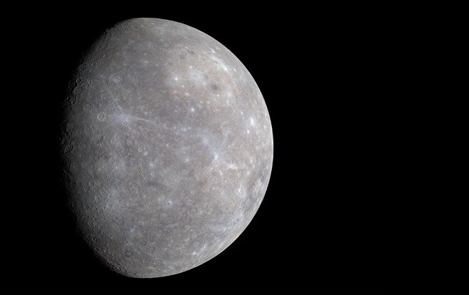
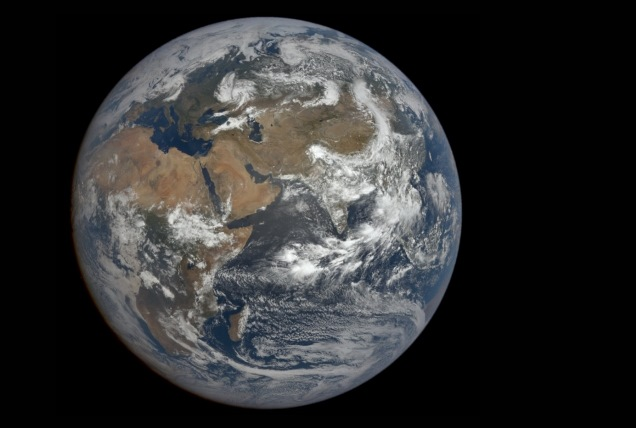

Первая


Приближенная к Солнцу
Самая жаркая и маленькая планета в солнечной системе. Меркурианский год длится по нашим меркам очень долго. На Меркурии экстремальная температура, воздуха и атмосферы на планете нет.
Меркурий
Аппарат MESSENGER, 21 декабря 2009 года
Вторая

Вечерняя звезда
Самая горячая планета, даже в сравнении с Меркурием. Одна из главных особенностей особенность планеты – кислотные дожди из серной кислоты, которые испаряются, не долетая до поверхности.
Венера

Аппарат Маринер-10, 7 февраля 1974 года
Третья


Голубая планета
Земля — наша родная планета, наиболее изученный космический объект. Это третья от Солнца планета. Пятая по размеру среди всех планет Солнечной системы. Она является также крупнейшей по диаметру, массе и плотности среди планет земной группы.
Земля
Аппарат DSCOVR, 21 июля 2022 года
Четвертая

Красная планета
Поверхность планеты имеет красноватый окрас. Это связано с содержанием в почве большого количества ржавчины. По своему строению он схож с Землёй. На марсе возникают кpупнeйшиe пылeвыe буpи.
Марс

Аппарат Мангальян, 10 октября 2014 года